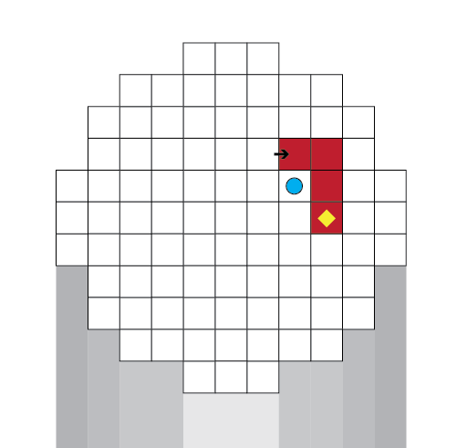

What is
Wave after Wave
Prototype
Wave after Wave is a prototype of a tower defence game, made in 3 weeks.
This is a tower defense game in which the player constructs and extends the enemy path leading to their House. At the start of the game, the player is presented with a limited, square-tile island. The island contains the player's House and a short, predefined path. Enemies always spawn at the far end of the current path and move toward the House. The player's objective is to destroy all enemies before they reach the House. Enemies are defeated by placing towers on the island. To increase the effectiveness and influence of these towers, the player can extend the path by placing additional path tiles, increasing the distance enemies must travel.
All construction is performed using cards. Cards are earned after successfully surviving each wave.
- After every standard wave, the player chooses one of two cards, which may be either a tower card or a path card.
- Every tenth wave is a boss wave. After defeating a boss wave, the player is offered a larger selection of cards.
- The player may hold an unlimited number of cards between waves.
- Once a wave begins, card placement is disabled until the wave is completed.
The core strategic challenge lies in deciding when to invest in additional defenses versus when to extend the path, balancing immediate survival with long-term scalability.
